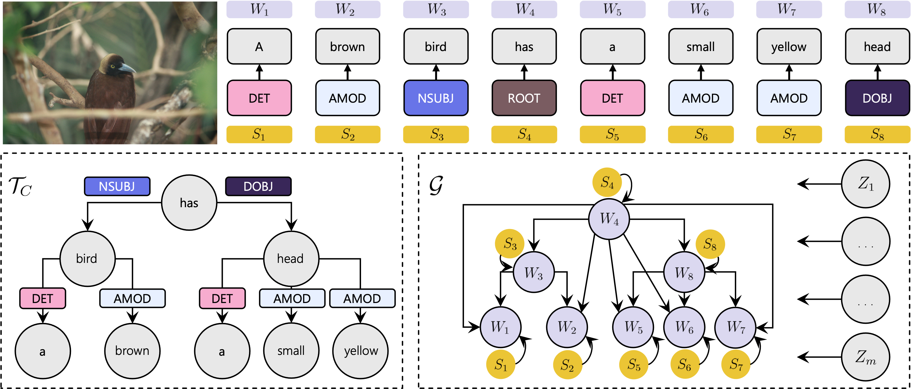
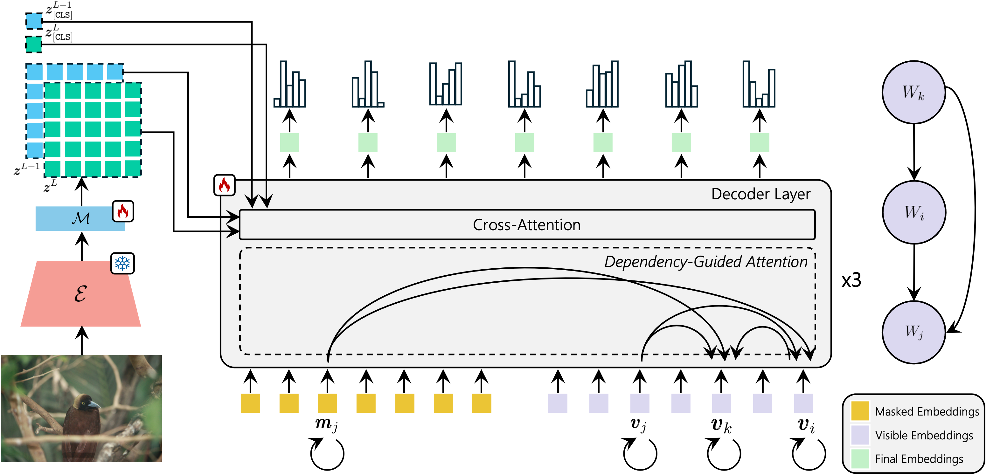

Method
Causal Graphical Model (CGM) Construction

We use an off-the-shelf dependency parser, which creates a syntactic tree from a given textual sentence. Specifically, given a caption, a dependency parser automatically builds a Dependency Tree (DT), in which each node is associated with a caption word and each edge represents a syntactic dependency relation between two words.
The DT, jointly with the visual features extracted from the image using a frozen visual encoder, are used to build a CGM, which describes the dependency relations among image patches and textual tokens. Our token prediction strategy is based on the dependency relations contained in this CGM.
The rationale behind this approach is illustrated in the figure using the caption "A brown bird has a small yellow head". For instance, in the resulting DT, the adjective "brown" depends on the noun "bird".
Dependency Guided Attention for Token Prediction

This figure presents a high-level architecture of our decoder. Each block of \(\mathcal{D}\) is composed of two layers.
In the first layer, we compute the self-attention of each masked embedding \(\mathbf{m}_j\) with itself, jointly with the attention of \(\mathbf{m}_j\) with all the visible embeddings \(\mathbf{v}_{i_1}, ..., \mathbf{v}_{i_k}\), where
\[\mathbf{PA}(W_j) = \{ W_{i_1}, ..., W_{i_k}, S_j, Z_1, ..., Z_m \}.\]
Note that there is no attention between \(\mathbf{m}_{j_1}\) and \(\mathbf{m}_{j_2}\), with \(j_1 \neq j_2\).
In the same layer, we compute the self-attention of each visible embedding \(\mathbf{v}_j\) with itself, jointly with the attention of \(\mathbf{v}_j\) with \(\mathbf{v}_{i_1}, ..., \mathbf{v}_{i_k}\).
Note that there is no information leak, since \(\mathbf{m}_j\), later used for the final prediction, has no direct or indirect access to \(\mathbf{v}_j\).
We call this
Dependency Guided Attention to differentiate it from the standard self-attention.
In the second layer of each block of \(\mathcal{D}\), both the masked (\(\mathbf{m}_j\)) and the visible (\(\mathbf{v}_j\)) embeddings pay attention to the visual features in \(\mathcal{Z}\) using cross-attention, in this way implementing the dependence between \(W_j\) and \(Z_1, ..., Z_m\).
Finally, after the last block of \(\mathcal{D}\) we discard the visible-token embeddings and we feed each masked-token final embedding to a linear layer computing a posterior distribution over the vocabulary of textual terms.